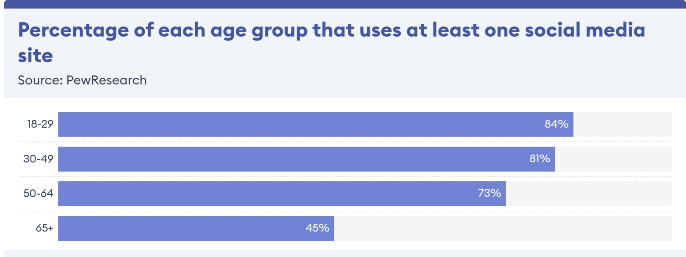

Social media refers to the means of interactions among people in which they create, share, and/or exchange information and ideas in virtual communities and networks.
The Office of Communications and Marketing manages the main
- facebook
- Instagram
- Youtube
- Twitter
- Social media is about conversations, community, connecting with the audience and building relationships. It is not just a broadcast channel or a sales and marketing tool.
- Authenticity, honesty and open dialogue are key.
- Social media not only allows you to hear what people say about you, but enables you to respond. Listen first, speak second
- Be compelling, useful, relevant and engaging. Don’t be afraid to try new things, but think through your efforts before kicking them off
Popular Social Media Tools and Platforms:
- Facebook:The world’s largest social network, with more than 1.55 billion monthly active users (as of the third quarter of 2015).
- Users create a personal profile, add other users as friends, and exchange messages, including status updates. Brands create pages and Facebook users can “like” brands’ pages.
- Instagram: free photo and video sharing app that allows users to apply digital filters, frames and special effects to their photos and then share them on a variety of social networking sites.
- Youtube:Video hosting and watching websites
- Twitter:A social networking/micro-blogging platform that allows groups and individuals to stay connected through the exchange of short status messages (140 character limit)
Social Media Platforms Statistics:

Social Media and Mental Health Statistics
- 39% of social media users report that they are addicted to social media
- Research shows that there is a correlation between social media use and depression for adolescents
- 67% of adolescents report feeling worse about their own lives as a result of their social media use
- Adolescents who spend more than three hours a day on social have an increased risk of mental health struggles